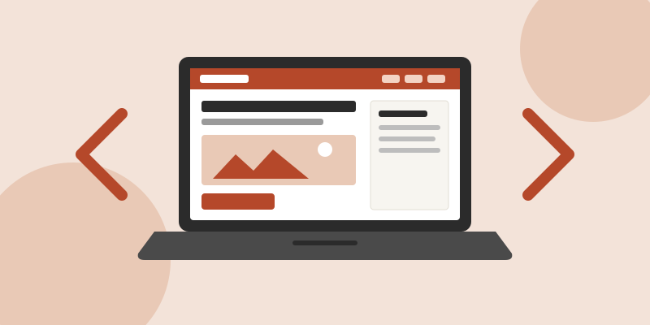

Chapter 9 Project: My First WordPress Site

Why WordPress?
- Free and open source: anyone can download it, use it and learn from it.
- Themes and plug-ins: change the look or add features without writing everything from scratch.
- Block editor: build pages with headings, images, lists and buttons by dragging blocks into place.
- Huge community: tutorials, forums and documentation are easy to find.
Ready to see what a first post looks like?
Comments
Chandler Holloway
October 21, 2026
Site Health suggestion: Site Health recommended adding a caching layer (a page cache or a persistent object cache). Caching saves a copy of each page so the server does not rebuild it on every visit, which makes the site load faster and use fewer resources.